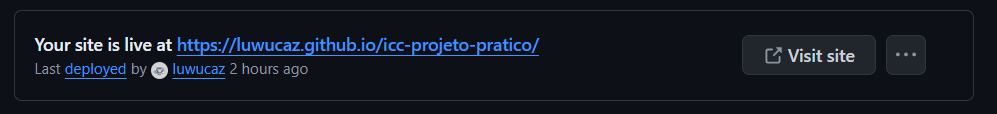

criação do repositório
|
- Primeiro, você precisa ter o Git instalado na sua máquina. Você pode verificar se o Git já está instalado executando o seguinte comando no terminal:
git --version- Depois precisamos configurá-lo com o nome de usuário e e-mail. Estes dados são usados para identificar quem faz as alterações no repositório.
git config --global user.name "Seu Nome"git config --global user.email "seu.email@example.com"- Podemos agora criar nosso diretório e iniciar o projeto com o git!
mkdir meu-projetocd meu-projetogit init- Quando terminamos de inserir, copiar, excluir ou alterar os arquivos dentro do diretório, podemos adicionar as nossas modificações em um commit.
git add .git commit -m "Primeiro commit"- (O "." em "git add ." significa que todas as alterações que foram feitas devem ser inseridas no commit)
- Para adicionarmos o repositório em um serviço de hospedagem na nuvem é necessário criar um repositório no serviço escolhido, depois se conectar, e por fim fazer o "push" dos dados para a nuvem.
git remote add origin https://github.com/usuario/meu-projeto.gitgit push -u origin master
|
configuração e o acesso ao repositório GitHub
|
- Para utilizar do serviço de hospedagem do GitHub Pages, é necessário abrir o repositório do projeto e clicar na opção com a engrenagem "Settings"
- Acessar a opção no meu lateral esquerdo, "Pages"
- Escolher na seção "Branch" qual branch iremos usar na publicação do site
- Se tudo foi feito corretamente, após alguns minutos já se pode acessar o site pelo endereço disponibilizado
- 
|
init
|
- Cria um novo subdiretório .git no diretório atual, que contém todos os arquivos necessários do repositório.
git init
|
clone
|
- Copia todo o repositório do servidor remoto para o diretório local.
git clone <url-do-repositório>
|
branch
|
- Exibe todos os branches, cria um novo branch, ou exclui um branch.
git branchgit branch <nome-do-branch>git branch -d <nome-do-branch>
|
checkout
|
- Troca para o branch especificado ou para um commit específico.
git checkout <nome-do-branch>git checkout <commit-hash>
|
status
|
- Informa quais arquivos foram modificados, quais estão no stage e quais não estão sendo rastreados.
git status
|
diff
|
- Compara as mudanças não comitadas, diferenças entre branches ou commits específicos.
git diffgit diff <branch>git diff <commit1> <commit2>
|
add
|
- Adiciona um arquivo específico ou todos os arquivos modificados ao stage.
git add <arquivo>git add .
|
commit
|
- Salva as mudanças adicionadas ao stage com uma mensagem descritiva.
git commit -m "mensagem de commit"
|
push
|
- Envia commits do branch atual para o branch remoto especificado.
git push <remote> <branch>
|
pull
|
- Baixa as mudanças do branch remoto e as incorpora ao branch atual.
git pull <remote> <branch>
|
revert
|
- Cria um novo commit que desfaz as mudanças de um commit específico.
git revert <commit-hash>
|
merge
|
- Combina o branch especificado com o branch atual.
git merge <branch>
|
stash
|
- Salva mudanças atuais para que você possa trabalhar em outra coisa e, depois, recupera essas mudanças.
git stashgit stash apply
|
rm
|
- Remove um arquivo do repositório e do diretório de trabalho.
git rm <arquivo>
|
config
|
- Configura as informações do usuário globalmente ou por repositório.
git config --global user.name "Seu Nome"git config --global user.email "seu@email.com"
|
reset
|
- Move o ponteiro do HEAD para o commit especificado, opcionalmente redefinindo o estado da área de trabalho.
git reset <commit>git reset --hard <commit>
|
remote
|
- Adiciona um repositório remoto ou exibe os repositórios remotos existentes.
git remote add <nome> <url>git remote -v
|
fetch
|
- Baixa as mudanças do repositório remoto, mas não as mescla no branch atual.
git fetch <remote>
|
show
|
- Exibe detalhes sobre um commit específico, incluindo as mudanças feitas.
git show <commit>
|
help
|
- Abre a documentação de ajuda para o comando especificado.
git help <comando>
|
rebase
|
- Muda a base de commits do branch atual para o branch especificado, reescrevendo o histórico de commits.
git rebase <branch>
|
blame
|
- Exibe as linhas do arquivo com informações de quem fez a última modificação em cada linha.
git blame <arquivo>
|
tag
|
- Lista todas as tags, cria uma nova tag anotada, ou exclui uma tag.
git taggit tag -a <nome-da-tag> -m "mensagem"git tag -d <nome-da-tag>
|